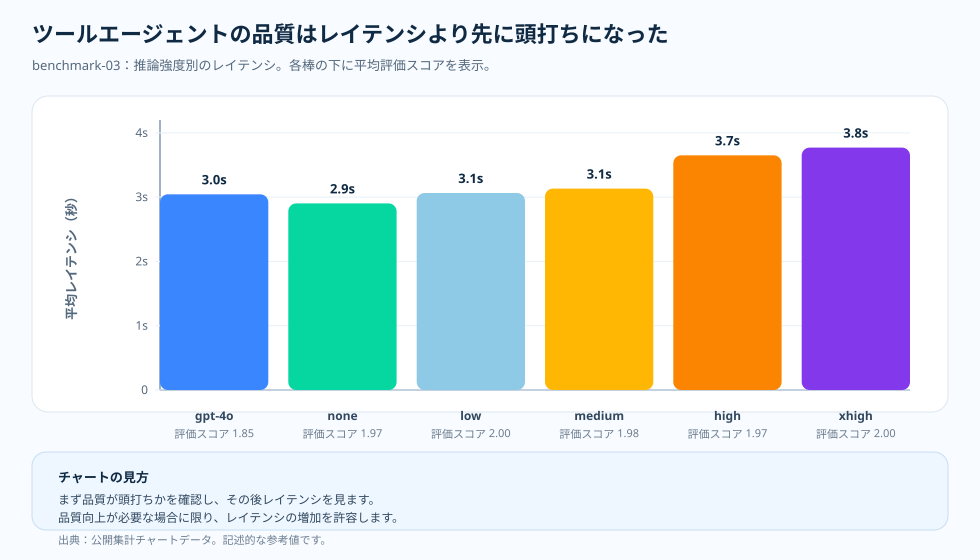

トピック記事 · benchmark-03 ツールエージェント
ツールエージェント：品質が天井に達したあと、語り始めるのはレイテンシ
チームがツールを使うエージェントを作り、それが間違いを出し始めると、最初の本能はたいてい同じだ。もっと考えさせよう、というものである。その本能は理にかなっている——ツールの作業には計画、ツールの選択、中間状態、回答の統合が絡むので、より多くの推論は効きそうに聞こえる。だが、もう一つの可能性がある。ツールの経路が十分に良く、ルーブリックがすでに頂点近くにあるとき、追加の推論はスコアが頭打ちのままレイテンシとコストだけを足すのかもしれない。benchmark-03 は、ツールエージェントの断面でどちらの読みが正しいかを検証する。
なぜこれを検証したか
状況はよくあるものだ。チームはツールを使うエージェントを出荷し、いくつかの ケースで外すのを見て、推論 effort のダイヤルに手を伸ばす。その理屈は筋が 通っている。エージェントの作業は純粋な想起ではない——計画を立て、正しい ツールを選び、中間状態を運び、そのうえで回答を統合しなければならない。 それだけの構造を持つタスクでは、「もっと考えさせる」は最初に引くべき 明白なレバーに感じられる。
だが、そこには確かめるべき二つの相反する読みが残る。追加の推論が本当に ツールの計画を改善し、回答を押し上げるのかもしれない。あるいは、ツールの 経路とルーブリックが一緒になって天井をつくり、エージェントが回答への 十分に良い経路を見つけてしまえば、より多くの推論はスコアが頂点近くに 張り付いたままレイテンシとコストだけを足すのかもしれない。benchmark-03 は、 どちらの読みが抽象論ではなく計測された断面で成り立つかを検証する。
そこで検証した。benchmark-03 はツールエージェントの断面を固定し、同じ モデルと effort のはしご——GPT-4o ベースライン、続いて GPT-5.2 の none、 low、medium、high、extra-high——を歩き、各セルでレイテンシ・コスト・ トークンの形の隣に平均評価スコアを読む。結果は率直に述べる価値がある。 GPT-5.2 は GPT-4o ベースラインを超えて品質を押し上げたが、GPT-5.2 の内部 では品質のセルが天井（約 1.97〜2.00）に向かって固まり、一方でコスト・ レイテンシ・推論トークンは上がり続けた。下の1枚要約はそれを一つの枠で 言い切り、続く各節が計測された詳細を示す。

問い
ツールエージェントの品質がすでに頂点近くにあるとき、追加の effort はなお何を買うのか。
根拠
benchmark-03 の品質・コスト・レイテンシ・トークン構成のチャート。
わかったこと
GPT-5.2 の品質は effort のはしご全体で 1.97〜2.00 の天井にとどまり、一方でコストはリクエストあたり $0.002762 から $0.003499 へ、レイテンシは 2.9s から 3.8s へ上った。
判断
ツールエージェントの作業は品質の天井に届く最も低い effort へ振り向け、それより高い effort は既定の選択ではなく、正当化すべきコストとレイテンシとして扱う。

天井効果こそが要点
benchmark-03 は単純な単調増加の物語を生まなかった。GPT-4o は評価スコア平均 1.85。GPT-5.2 は none で平均 1.97、low で 2.0、medium で平均 1.98、high で平均 1.97、extra-high で 2.0 に達した。ベースラインに対する品質の改善ではあるが、同時にこれは天井でもある。
いったん複数のセルが頂点近くに固まってしまえば、effort を上げることに自動的な意味はなくなる。次の根拠は、レイテンシ、トークン形状、そして集計スコアの内側に隠れた失敗モードから来る。
チャートの読み方
このチャートは、品質がすでに頂点近くに圧縮されているため、棒の高さにレイテンシを使っている。X 軸はモデル/effort のセル、Y 軸は平均レイテンシ（ミリ秒）。各棒の下のラベルは、対になる平均評価スコアを示す。
このチャートは意図的にヒストグラムではない。要約されたセル同士の比較だ。二つのセルの品質が近いなら、短いほうの棒が「長く待つことでなお何か目に見えるものを買えているのか」を問いかける。
ツールが読みを変える理由
ツールエージェントの作業には、ツールの選択、中間状態、回答の統合が含まれる。それが短い事実タスクよりも要求度を高くしている。同時に、集計の品質スコアが異なる種類の振る舞いを覆い隠しうる、ということでもある。あるセルは、ツールが大半を片づけたから通ったのかもしれないし、正しいツールを使いながら要約が下手で落ちたのかもしれない。
チャートは検査の必要をなくしはしない。どこを検査すべきかを教えてくれるのだ。このランで魅力的な領域は、基準をどこに置くかで決まる。厳密な 2.00 を求めるなら、最初にそこへ届くセルは low だ。天井近くのスコアですでにルーブリックを満たすなら、ベースラインに近いレイテンシで満たすのは none だ。どちらにせよ動きは同じ——基準を満たす最も低いセルを見つけ、より高い effort へ上げる前にコストとレイテンシを読む。
押さえておきたい要点
ツールエージェントのベンチマークには二度の読みが要る。まず、推論が正しさを改善したかを問う。次に、品質が頂点近くに固まっているなら、どのセルがレイテンシとトークンの圧力を抑え込んでいるかを問う。二度目の読みは付け足しではない。結果をベンチマークの外で使えるものにするのは、まさにこの読みだ。
根拠の表
docs/blog/data/chart-data/cost-curves-effort/benchmark-03/quality.json
から来ており、エビデンスダッシュボード
（配信されるチャートデータ）で
レイテンシとコストのチャートの隣に読む。

| 根拠の行 | 指標 A | 指標 B | 付け加わること |
|---|---|---|---|
| GPT-4o baseline | 評価スコア 1.85 | 平均レイテンシ 3.0s | 強いベースライン。ただし天井ではない。 |
| GPT-5.2 none | 評価スコア 1.97 | 平均レイテンシ 2.9s | ほぼ同じレイテンシで品質が上。 |
| GPT-5.2 low | 評価スコア 2.00 | 平均レイテンシ 3.1s | わずかなレイテンシ増で天井スコア。 |
| GPT-5.2 extra-high | 評価スコア 2.00 | 平均レイテンシ 3.8s | 同じく天井スコア。だが、より遅い。 |
出典と根拠の境界
上記の数値はすべて本リポジトリの公開アーティファクトにたどれ、コストの主張はいずれも日付付きの価格スナップショットで算定している。品質の天井に届く最も低い effort で止めるというこの記事のルーティングの習慣は、記事自身の運用上の推論である。下の二つの Tier は、文書化された入力がどこで終わり、推論がどこから始まるのかを示す。
- [1] Tier 1 — 方法論の契約： 本リポジトリ、
docs/05-methodology.md（v1.0）。セルあたり N = 20 のオーサリング済みサンプル、R = 3 回の反復、公開集計スライスのみ。チャート読解の本文はこの凍結された前提に立っており、誤差バーは信頼区間ではなく標準偏差で、N = 20 で p 値は主張しない。 - [2] Tier 1 — PAYG 価格スナップショット： リクエストあたりのコストは本リポジトリの
pricing/azure-openai-payg-2026-05.yamlで算定している。出典：Azure OpenAI 価格ページ（2026-05-19 アクセス）· アーカイブ。定価が動けばコストの数値も変わる。 - [3] Tier 2 — benchmark-03 スライスの測定： 本リポジトリ、
benchmarks/03-tool-using-agent/analysis.json。天井効果の品質の棒——1.85 の GPT-4o ベースラインと、1.97（none）、2.00（low）、1.98（medium）、1.97（high）、2.00（extra-high）の範囲で揺れた GPT-5.2 の段——と、レイテンシが 2.9s から 3.8s へ伸びるなかでリクエストあたり $0.002762（none）から $0.003499（extra-high）へ単調に上がった対応するコスト値の出典。 - [4] Tier 2 — レンダリング済みチャートデータ： 本リポジトリ、
docs/blog/data/chart-data/cost-curves-effort/benchmark-03/cost-per-request.json、quality.json、latency.json。docs/blog/data/chart-data/token-composition/benchmark-03/tokens.jsonと一緒に読むと、推論トークンがリクエストあたり 0 から 52.15 へ増えても品質の棒は天井から動かなかったという根拠になる。 - [5] エビデンスダッシュボード： レンダリングされた benchmark-03 の品質とコストの対チャートは、同じアーティファクトを監査できる形である。
このスライスが何を証明し、何を証明しないか：このツール利用エージェントのスライスでは、推論 effort を上げると品質が天井に当たり——GPT-5.2 のスコアは 1.97〜2.00 の帯を出なかった——一方でコストは effort の段階を通じて上がり続けたことを示す。同じ天井が短い事実回答、多段推論、統合の作業でも同じ effort 水準で現れることは証明しない。各トピックはそれぞれの測定を持つ。
この根拠から言えること
ツールエージェントの作業で役に立つ一文は「effort を上げよ」ではない。「本当に必要なエージェントの振る舞いを保つ、最も低い effort を見つけよ」だ。
実務上のルール
- 品質チャートは、品質の棒だけでなく、同じ benchmark-03 セルのコストチャートとレイテンシチャートと対にして読んでください。
- 品質の基準——厳密な 2.00 でも、許容できる天井近くのスコアでも——を満たす最も低い effort のセルを見つけ、それを既定にしてください。
- それより高い effort は、目に見えるスコアの動きで正当化すべきコストとレイテンシとして扱ってください。
- 信頼する前に集計を確認してください。通過したセルは、推論ではなくツールに頼っている可能性がある。
- ワークロードの形が変わったら測定し直してください。この天井はツールエージェントの作業に限られる。
実務上のルール：このツールエージェントのスライスでは、品質が天井に達したら推論 effort を上げるのをやめてください。追加の effort が買ったのは、より高いスコアではなく、増えるコストとレイテンシである。
次： PTU/PAYG クロスオーバー：容量の結果ではなく、プランニングの線 — ワークロードをサイジングしたあと、プロビジョニングされたスループットが従量課金を上回るのはいつか。